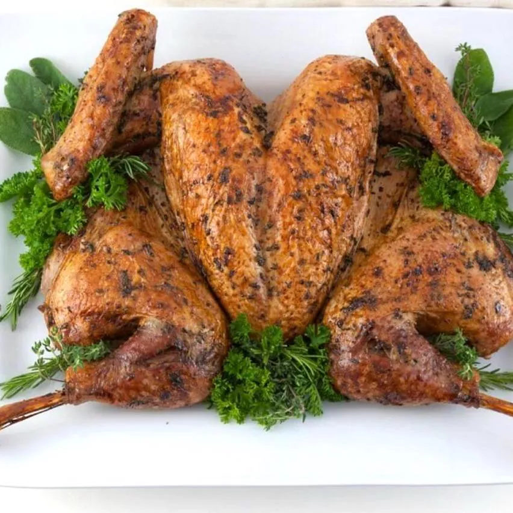

Roast Spatchcock Turkey

Description
This spatchcock turkey recipe results in the juiciest, crispiest turkey cooked in a fraction of the time it
usually takes to roast a whole turkey.
If you've never tried it, spatchcocking is easier than you might think!
Ingredients
- Turkey
- Olive oil
- Fresh sage, Rosemary and Thyme
- Salt and Black Pepper
Steps
- Remove the backbone of the turkey
- Break the breastbone
- Preheat the oven to 350 degrees F
- Place turkey, breast-side down, on a cutting board. Using a pair of sharp heavy-duty kitchen shears, cut
along one side of the backbone.
- Repeat the other side of the backbone.
- Roast in the preheated oven for 1 hour 30 minutes, rotating the baking sheet every 30 minutes.
- Increase the oven temperature to 400 degrees F (200 degrees C) and continue to roast until skin is crisp and
golden, about 15 minutes more.